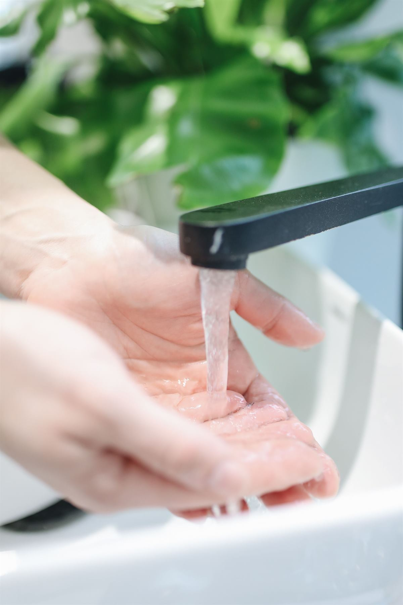
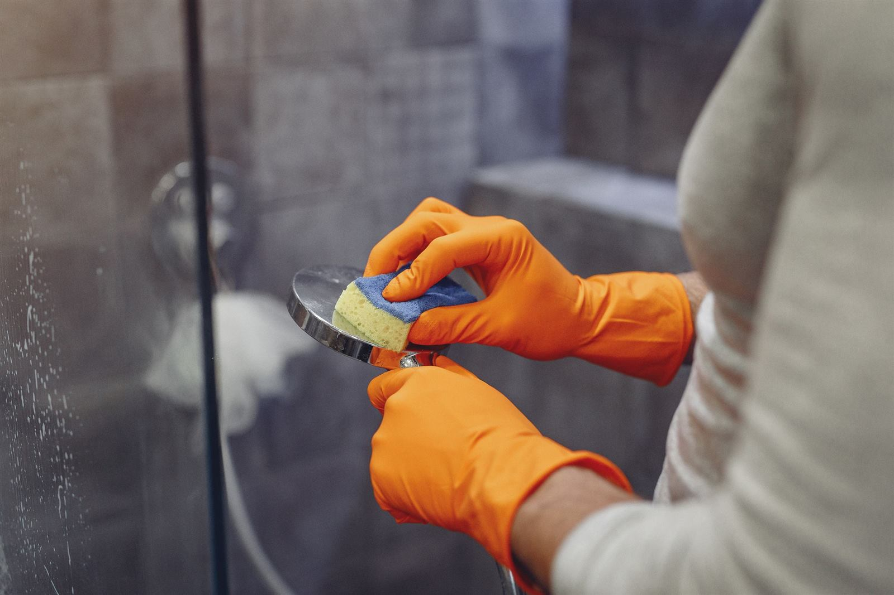
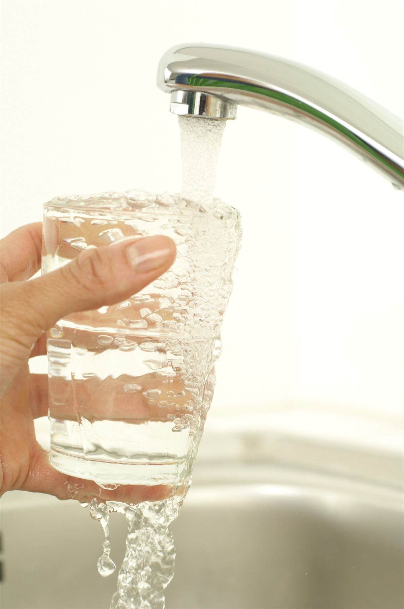
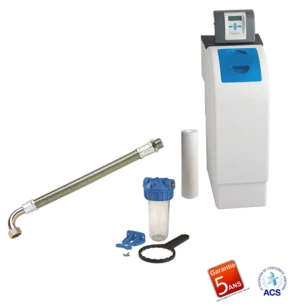
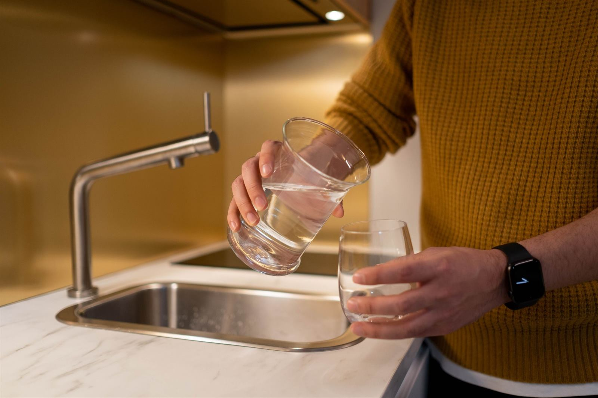
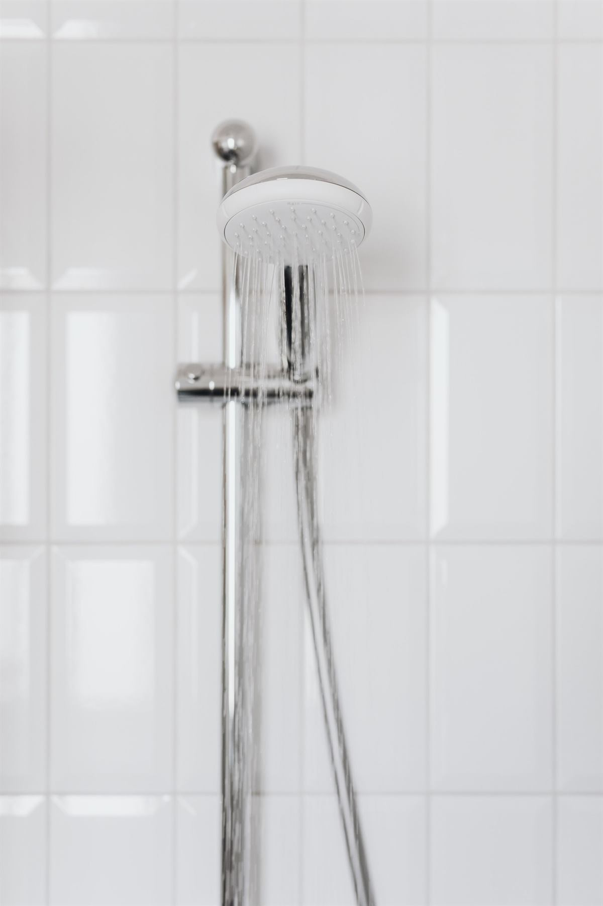

Maison
Le Privilège
20 litres de résine
La qualité et la performance de nos adoucisseurs pour l'industrie, pour votre famille : tranquillité, simplicité et performance.
Plaquette (PDF)Accueil / Particuliers
Vous désirez un antitartre ou un adoucisseur de qualité, au meilleur prix, avec le suivi et la garantie d'une société spécialisée dans le traitement de l'eau ? Nous vous mettons en relation avec nos partenaires plombiers-chauffagistes en Rhône-Alpes.

Un adoucisseur permet un fonctionnement optimal et augmente la durée de vie des canalisations, robinets, chauffe-eau, lave-linge, bouilloire ou cafetière. Et j'utilise moins de savon, de shampoing, de lessive et d'adoucissant.
Je n'augmente pas ma consommation d'énergie, je change moins souvent d'appareils électroménagers et je rejette moins de détergents dans la nature.
Avec l'eau adoucie, mes cheveux sont plus soyeux, mon linge plus souple et ma peau plus douce.

Un adoucisseur ne dissout pas le calcaire : il remplace les ions calcium et magnésium de l'eau par des ions sodium.
L'eau du réseau transporte du calcium et du magnésium. Plus elle en contient, plus elle est « dure » : c'est ce que mesure le TH, exprimé en degrés français (°f).
En traversant la résine échangeuse d'ions, l'eau cède son calcium et son magnésium, remplacés par du sodium. Les résines sont agréées par le ministère de la Santé pour une application alimentaire.
Canalisations, robinets, chauffe-eau et électroménager sont protégés du tartre. L'eau adoucie reste potable : ce procédé est reconnu pour le traitement des eaux destinées à la consommation humaine.
Quand la résine est saturée, une saumure préparée dans le bac à sel la nettoie, puis l'eau de rinçage part à l'égout : 5 à 8 m³ par an pour un foyer, soit 4 % de consommation d'eau supplémentaire au maximum.

H2O Partner utilise exclusivement des matériels fabriqués en France (sauf la tête d'adoucisseur, américaine, et les résines, fabriquées en France ou en Italie). Connaître ces fabricants, c'est garantir la qualité alimentaire de votre eau. Attestation de conformité sanitaire (ACS) sur demande.
Maison
20 litres de résine
La qualité et la performance de nos adoucisseurs pour l'industrie, pour votre famille : tranquillité, simplicité et performance.
Plaquette (PDF)
Appartement
8 litres de résine
Le format compact pour les appartements où la place est limitée, avec les mêmes exigences de qualité.
Plaquette (PDF)Garantie 5 ans dans le cadre d'un entretien annuel.
La qualité n'est pas synonyme de cher : vos plombiers-chauffagistes travaillent directement avec nous, sans intermédiaire.
Testez vos idées reçues : choisissez « Vrai » ou « Faux », la réponse s'affiche. D'après un document de l'Union des professionnels du traitement de l'eau (UAE).
Score : 0 / 11, 0 jouées

Un adoucisseur favorise la prolifération bactérienne.
L'adoucissement n'entraîne ni agressivité, ni corrosivité de l'eau.
Un adoucisseur respecte le porte-monnaie et l'environnement.
L'eau adoucie est potable.
Boire de l'eau adoucie peut provoquer une carence en calcium.
Un adoucisseur augmente la consommation d'eau.
L'eau adoucie a un goût salé.
L'eau froide ne doit pas être adoucie.
On ne doit pas adoucir l'eau en dessous de 15 °f.
Tous les sels se valent.
Un adoucisseur doit être entretenu au moins une fois par an par un professionnel.
Dites-nous où vous habitez et ce que vous cherchez : nous vous mettons en relation avec un plombier-chauffagiste partenaire de votre secteur.
Être mis en relation04 76 06 92 12